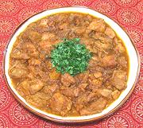

|
Country Captain - Anglo-IndianIndia | ||||
| Serves: Effort: Sched: DoAhead: |
4 w/rice *** 2 hrs Yes |
This is the source from which the famous Country Captain of the American Southeast and the English Country Captain were derived. This is a drier curry than either of those, and is still well known in India. | |||
| For historical background see Historical Notes. For the American version see our recipe Country Captain, and for the English version see our recipe Country Captain - English. See also Comments. | |||||
|
|
1-1/2 ------- 4 1/2 2 1/2 1 1/2 4 1/2 ------- 1-1/2 1 1 2 1 1 ------- 1/4 |
# --- cl in T t t t t --- # t T T c --- c |
Chicken meat (1) -- Marinade Garlic (6) Ginger Lime Juice Turmeric Chili Powder (2) Pepper, black Cloves Salt --------- Onion Salt Chili, green (3) Oil (4) Oil (more) Stock, chicken -- Garnish Cilantro |
Prep - (1-1/2 hrs - 30 min work)
|